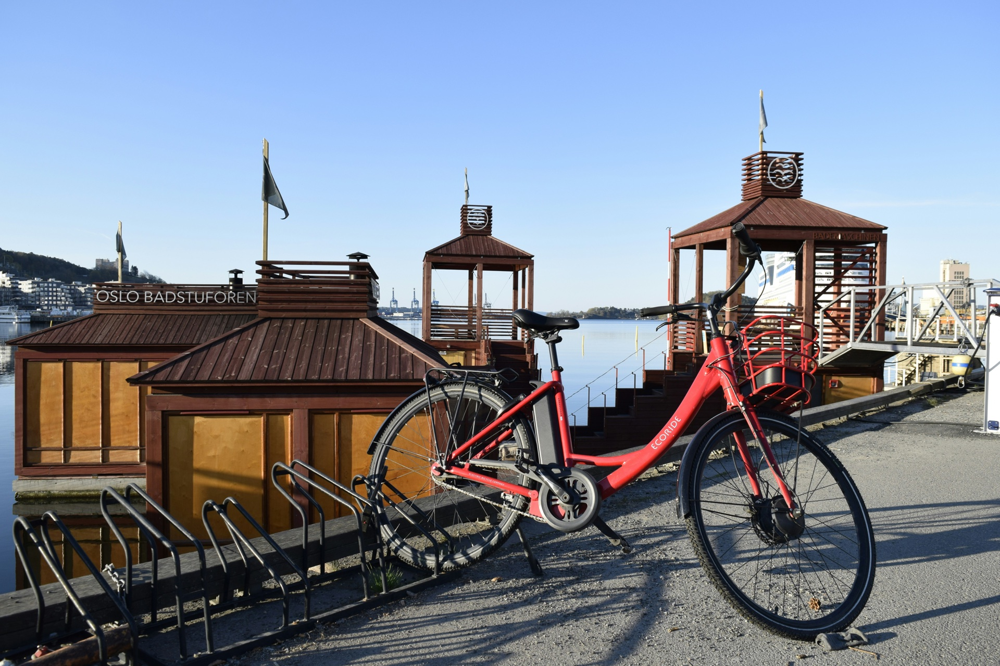
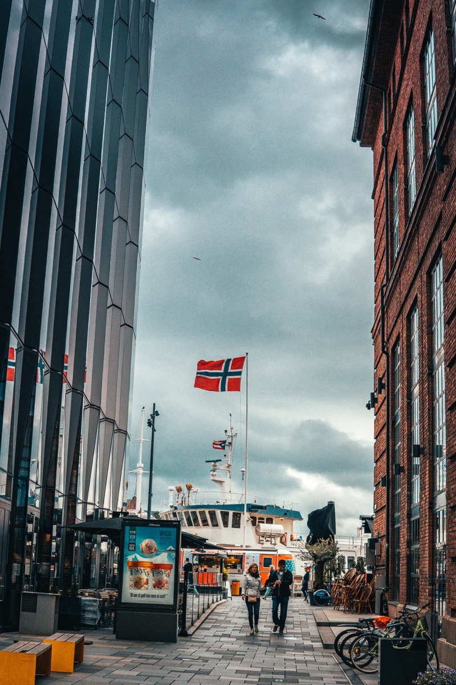

Making the most of a day — or two — in port
A lot of Norway cruises include Oslo as either the embarkation point or the final port — or both. Which means many passengers find themselves with a day in the city before the ship boards, or a day after it docks, with bags in storage and several hours to fill. This is a genuinely good situation to be in. Oslo rewards a day well.
Most ships embark from Oslo in the late afternoon or early evening. If you arrive by plane in the morning, you have most of the day before you need to be at the terminal. That is enough time to see the city properly — and to recover from a long flight before the ship leaves.
The cruise terminal at Akershus sits right at the waterfront, ten minutes from Aker Brygge on foot. Almost everything worth seeing in Oslo is within a few kilometres of there. You do not need to think hard about logistics.

The most efficient way to use a morning in Oslo is a guided bike tour. The City Highlights tour — Opera House, Vigeland Park, Aker Brygge, Royal Palace — runs two hours and starts at your hotel. You see the main sights with context rather than just photos, and you finish with the afternoon free for lunch, museums, or simply sitting on the waterfront before boarding.
The situation is often the reverse: the ship docks in the morning, you clear customs and collect your bags, and your flight home is not until the evening. You have six or eight hours in a city you may not have planned to spend any time in.
Left luggage is available at Oslo Central Station (Oslo S), a short ride from the cruise terminal. Drop the bags, and the day opens up. The same logic applies as arrival day — Oslo is compact, the sights are close together, and a bike covers more ground in less time than any other option.
One thing worth considering on departure day: you are not on a schedule. The ship has already left. If you want to go somewhere less obvious — further from the waterfront, off the tourist circuit — you have the flexibility to do it. The Bygdøy Peninsula tour (fjord views, the Viking Ship Museum area, 2.5 hours) is excellent for a final morning in Oslo. If you are active and want something different entirely, the Oslo Gravel Short takes you into the Nordmarka forest — fifteen minutes north of the city, two hours of pine and birch, an experience almost no cruise passengers ever have.
That is a different situation — you need to be back on board before all-aboard. We run dedicated shore excursion tours for cruise passengers with guaranteed return times. See our Oslo shore excursion page for the details. The principle is the same: private guide, pickup at the terminal, no strangers.
The Munch Museum is large and can consume two hours on its own. Worth it if you have time; skip it if you do not. The National Gallery has moved — confirm its current location before building a plan around it. Akershus Fortress is free and close to the terminal, worth thirty minutes if you pass it, not worth going out of your way for.
Karl Johans gate — the main pedestrian boulevard — is fine to walk but does not need much time. The waterfront between the terminal and Aker Brygge is more interesting.
Whether you have a day before boarding or a morning after docking, we run private guided tours from your hotel or the cruise terminal. Two hours minimum, all sights covered.
See Shore Excursion ToursOslo's main cruise terminal is at Akershus, close to the city centre — about 10 minutes on foot from Aker Brygge. Some ships dock at Filipstad, slightly further west. Both are within easy reach of the main sights.
The city centre (Sentrum) and Aker Brygge area put you within walking distance of the terminal. Most central Oslo hotels are a 15–20 minute walk or short taxi ride away. For a guided bike tour, your guide picks you up at your hotel — location is not an issue.
The Opera House, Vigeland Sculpture Park, Aker Brygge and the Bygdøy peninsula are the most rewarding in a single day. A private guided bike tour covers the main sights in two hours, leaving the afternoon free for lunch, the waterfront or a museum before boarding.
Yes. Oslo Central Station (Oslo S) has left luggage lockers. It is about 15 minutes from the cruise terminal on foot or a short taxi ride. Drop the bags and the day is yours.
The Nordmarka forest. It starts fifteen minutes north of the city and almost no cruise passengers ever reach it. The Oslo Gravel Short — two hours, gentle forest gravel, e-bike available — fits neatly into a pre- or post-cruise day and gives you something most port visitors never experience.